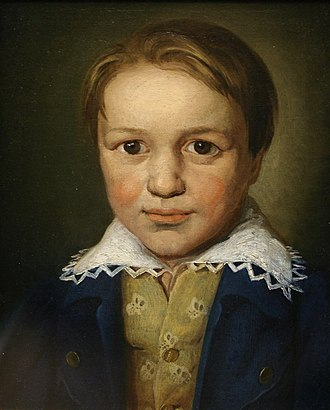

16 грудня 1770, Бонн — 26 березня 1827, Відень
Ранні роки Бетховена
wikipedia
Симфонії
- Op. 21: Симфонія № 1 до мажор (написана з 1799 по 1800, прем'єра 1800)
- Op. 36: Симфонія № 2 ре мажор (написана з 1801 по 1802 рік, прем'єра 1803)
- Op. 55: Симфонія № 3 мі-бемоль мажор („Героїчна“) (складено з 1803 по 1804 рік, прем'єра 1804)
- Op. 60: Симфонія № 4 сі-бемоль мажор (складено 1806 році, прем'єра 1807)
Концерти
- WoO 4: Концерт для фортепіано мі-бемоль мажор (1784)
- Op. 15: Концерт для фортепіано № 1 до мажор (написан 1796-97)
- Op. 19: Концерт для фортепіано № 2 сі-бемоль мажор
- Op. 37: Концерт для фортепіано № 3 до мінор (написан 1800-01)